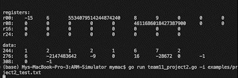
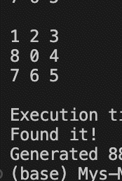

Projects
-

Conway's Game of Life
A recreation of Conway's famous game of life implepented in Java utilizing multithreaded programming.
-

ARM instruction simulator
Takes in ARM machine code and returns the state of registers, disassembled instructions pc, and memory.
-

A-Star intelligent search implementation
Implemented A-Star intelligent search algorithm in C++ to solve a sliding tile puzzle. Done on a team for my intro to AI class.